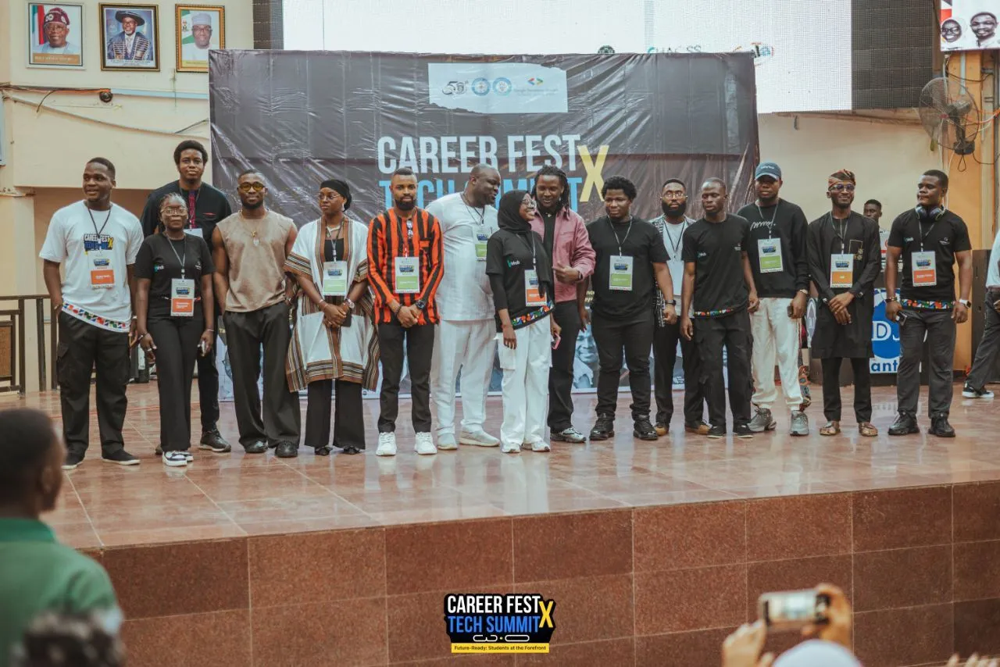
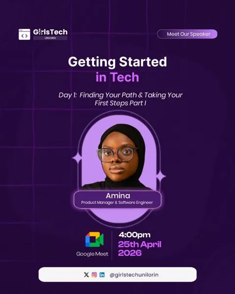
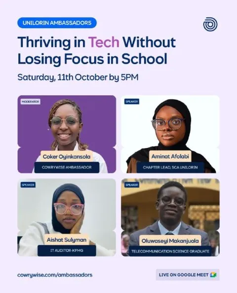
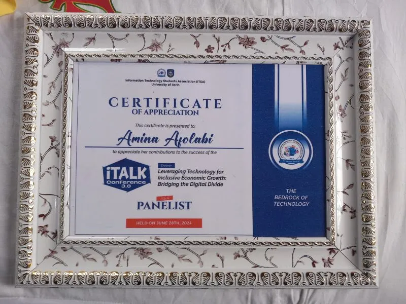
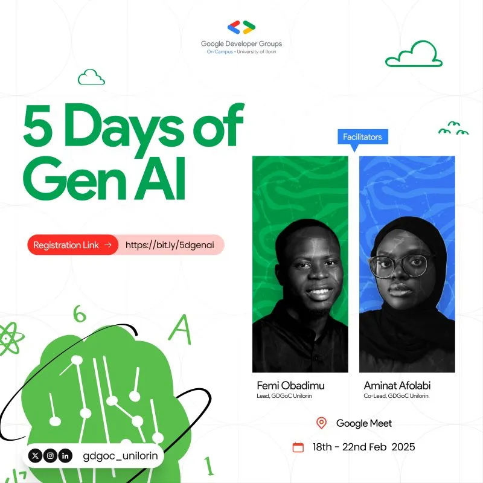
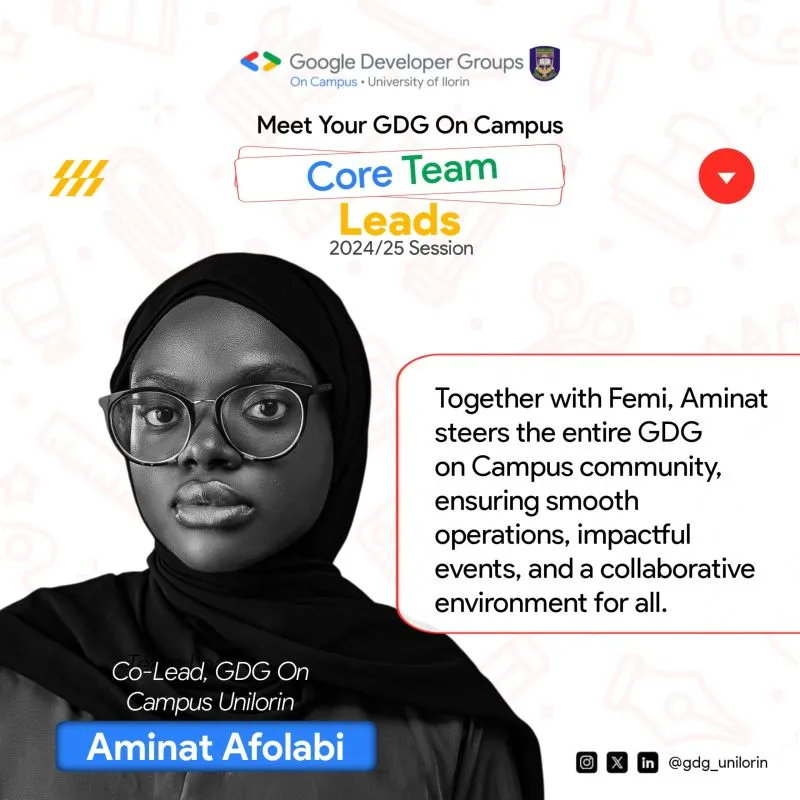

Beyond the products
I bring people into the room.
Communities, events and stages. This is where I learned to run things for thousands of people, long before product was my job title.

GDG on Campus Unilorin · 27 May 2025
CareerFest X TechSummit
The largest tech event Ilorin has hosted. I co-led it with Femi Obadimu, oversaw 100+ volunteers across welfare, technical, media and other units, and led the sponsorship drive myself, pitching until UAC Foods, Bitnob, CHAOSS and CafeOne by Sterling came on board.



"Leadership is less about managing people and more about aligning vision, trust, and execution."What planning CareerFest taught me
Communities I've led
- 2023 to 2025Co-Lead ↗GDG on Campus, University of Ilorin
Led a 60+ person core team and grew membership 40% in one academic year, making it the largest GDG on Campus chapter in Sub-Saharan Africa. Ran Build with AI 2025 for 320+ participants and co-facilitated 5 Days of Gen AI. Started on the technical team in 2023.
- 2026 to nowTeam Lead, Venue Operations and Attendee Experience ↗Tech Revolution Africa 3.0
From Deal Room volunteer to leading the attendee journey end to end: registration, wayfinding, seating, session transitions and how people find exhibitors and sponsors.
- 2023 to 2025Pioneer Chapter Lead ↗She Code Africa, University of Ilorin
Started the university's first female-focused tech community and grew it to 350+ members, with onboarding, escalation and reporting workflows that outlasted my tenure.
- 2024 to 2026Technical Lead ↗GirlsTech Unilorin
Led the technical side of a community helping young women get started in tech, and taught sessions myself.
Talks and panels
- 25 Apr 2026Getting Started in Tech: Finding Your PathSpeaker · GirlsTech Unilorin
- 11 Oct 2025Thriving in Tech Without Losing Focus in SchoolSpeaker · Cowrywise Unilorin Ambassadors
- 27 May 2025Fireside chat with Iyinoluwa AboyejiHost · CareerFest X TechSummit
On building Andela and what young builders can take from it.
- 18 to 22 Feb 20255 Days of Gen AIFacilitator · GDG on Campus Unilorin
A five-day online series co-facilitated with Femi Obadimu.
- 28 Jun 2024Leveraging Technology for Inclusive Economic GrowthPanelist · iTalk Conference 3.0, ITSA Unilorin
Bridging the digital divide.
Pinned up · tap anything to zoom






Everything I work with, unwrapped.
The methods, tools and code I reach for to get a product from problem to launch.
Product
- Discovery
- User interviews
- PRDs and briefs
- Edge cases
- Acceptance criteria
- Prioritisation
- Roadmapping
- QA and launch readiness
Tools
- Jira
- Linear
- Notion
- Figma
- Google Analytics
- Brevo
- Slack
Build
- HTML and CSS
- JavaScript
- React
- Python
- APIs
- GitHub
AI
- Claude
- ChatGPT
- Gemini
- Prompting for product work
Off the clock I run, play volleyball, watch anime, and say yes to more side quests than my calendar can handle.